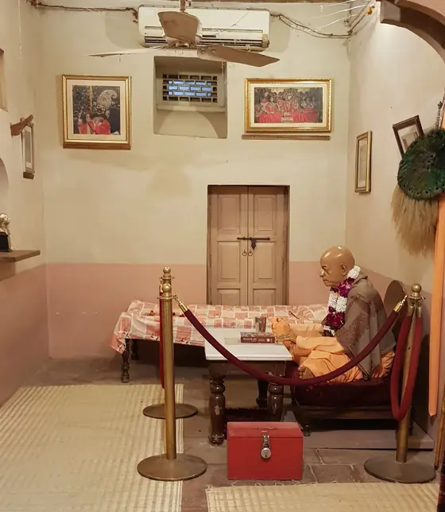
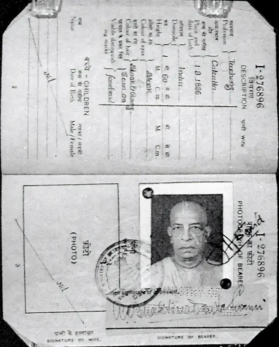
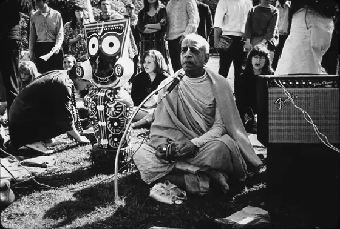
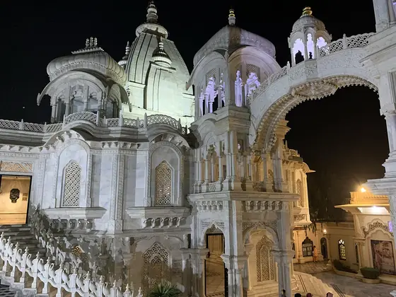

Calcutta
His birth.
Śrīla Bhaktisiddhānta Sarasvatī
Meets his spiritual master.
Back to Godhead
The first issue, typewritten and distributed by hand.
1959 to 1965Rādhā-Dāmodara, Vṛndāvana
Where he worked on the Bhāgavatam before leaving for America.
The Jaladuta
He sails for the United States.
New York
The International Society for Krishna Consciousness is incorporated.
San Francisco
Moscow
His first and only visit to the USSR.
Vṛndāvana
His departure.
His vāṇī continues.

Aman Kumar, CC BY-SA 4.0.

Government of India, GODL-India.

Mukunda Goswami, CC BY-SA 3.0.
Samuel Speerstra aka Syamasundara Das, CC BY-SA 3.0.

Cinosaur, CC BY-SA 4.0.